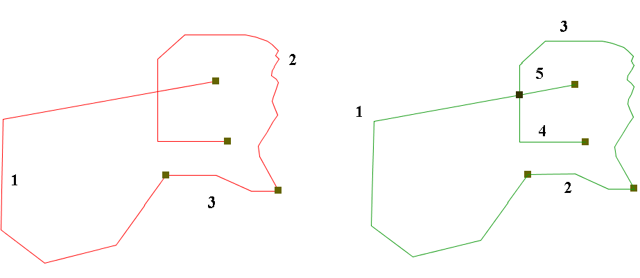

Pulisci topologia lineare (Clean)
Questo geoprocesso forza il layer di input ad avere una corretta topologia lineare.
"Correggi topologia lineare" significa che il layer non può avere pseudonodi, cioè che le linee possono intersecarsi solo in corrispondenza dei nodi, punti estremi.

Quando il geoprocesso incontra uno pseudonodo, le line che si intersecano sono spezzate, generando quattro nuove linee che in tale intersezione hanno un loro punto estremo.